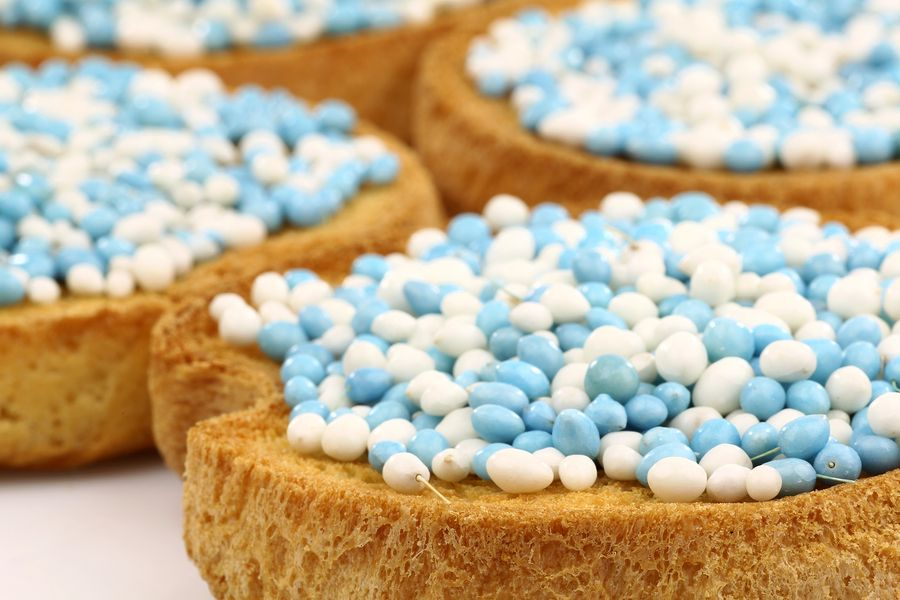
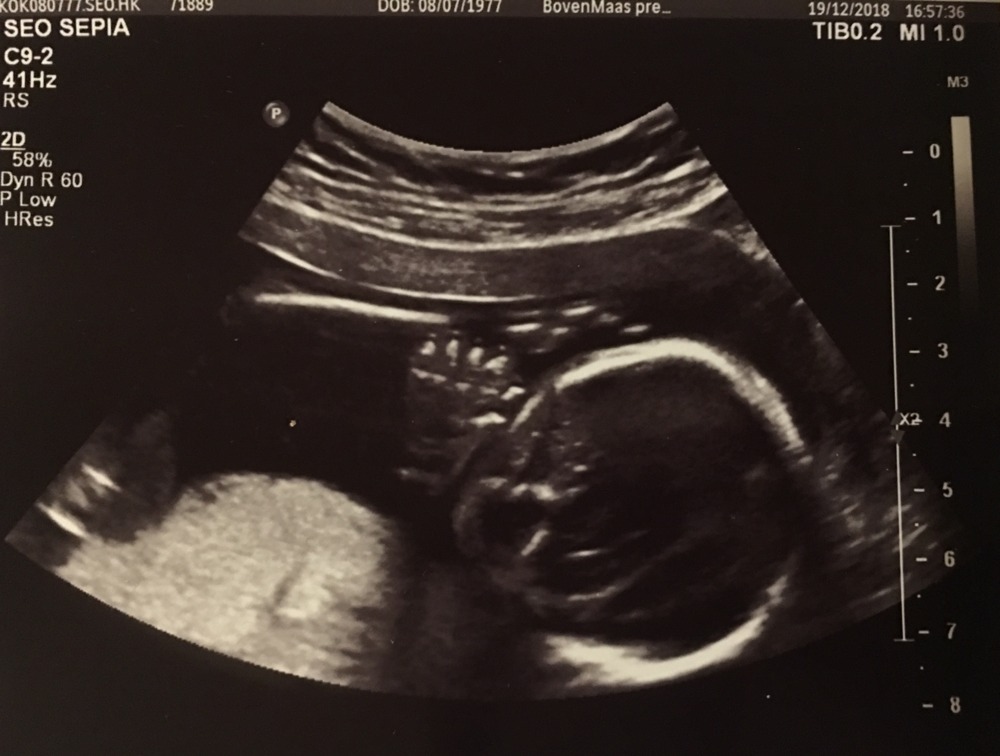
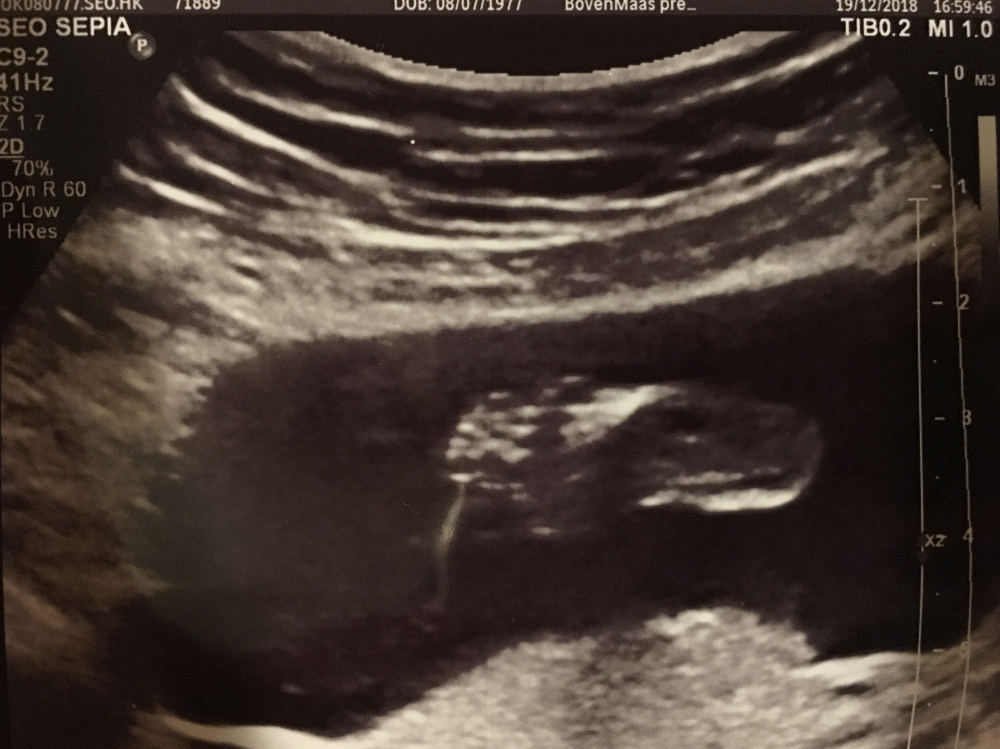
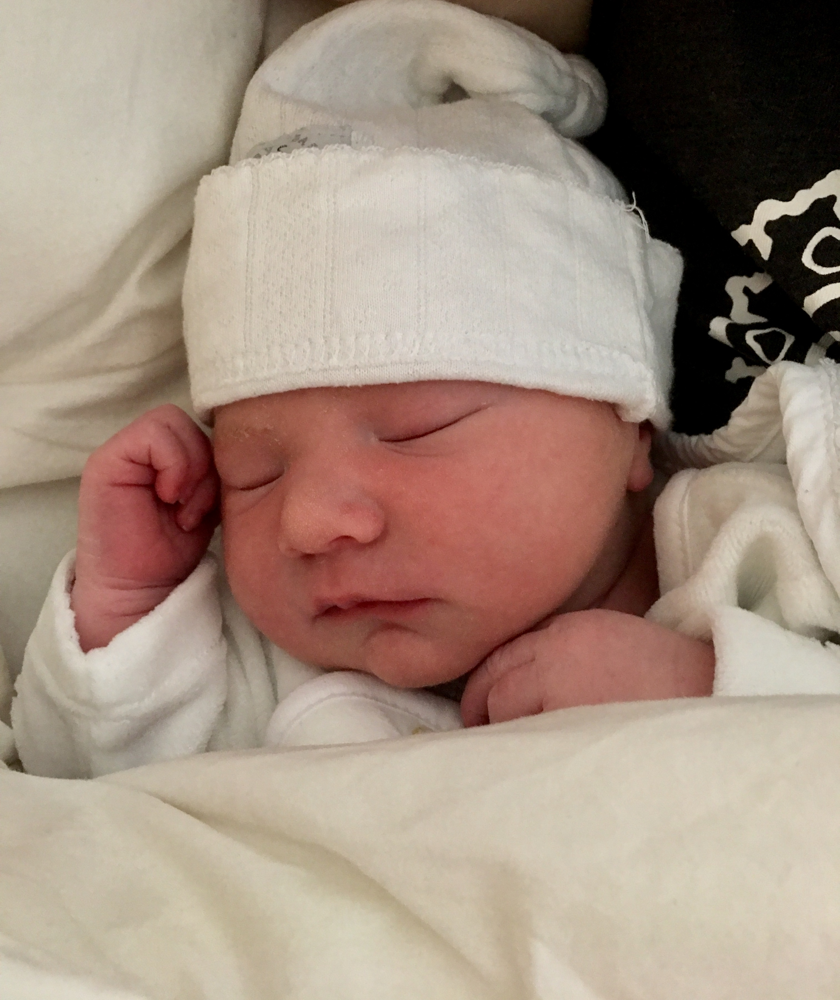
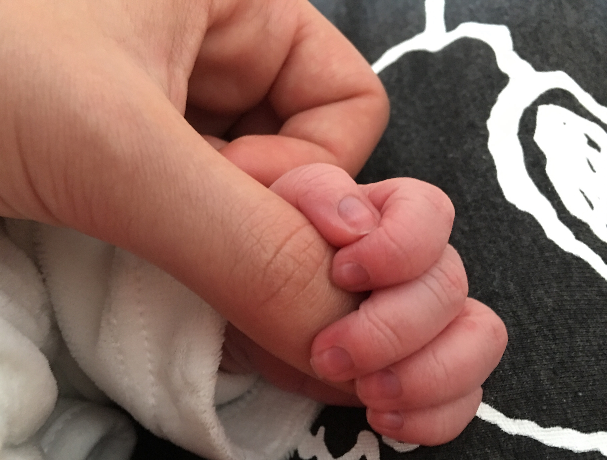
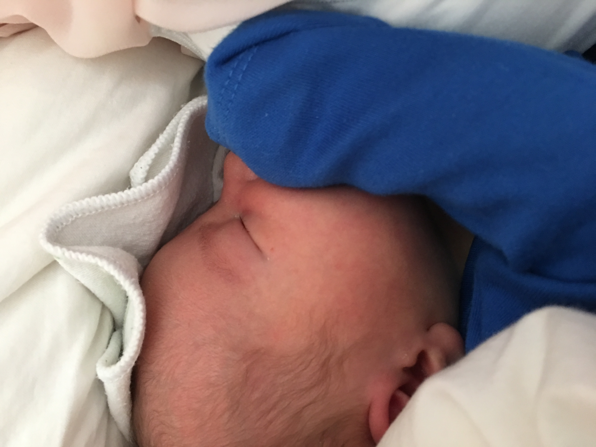
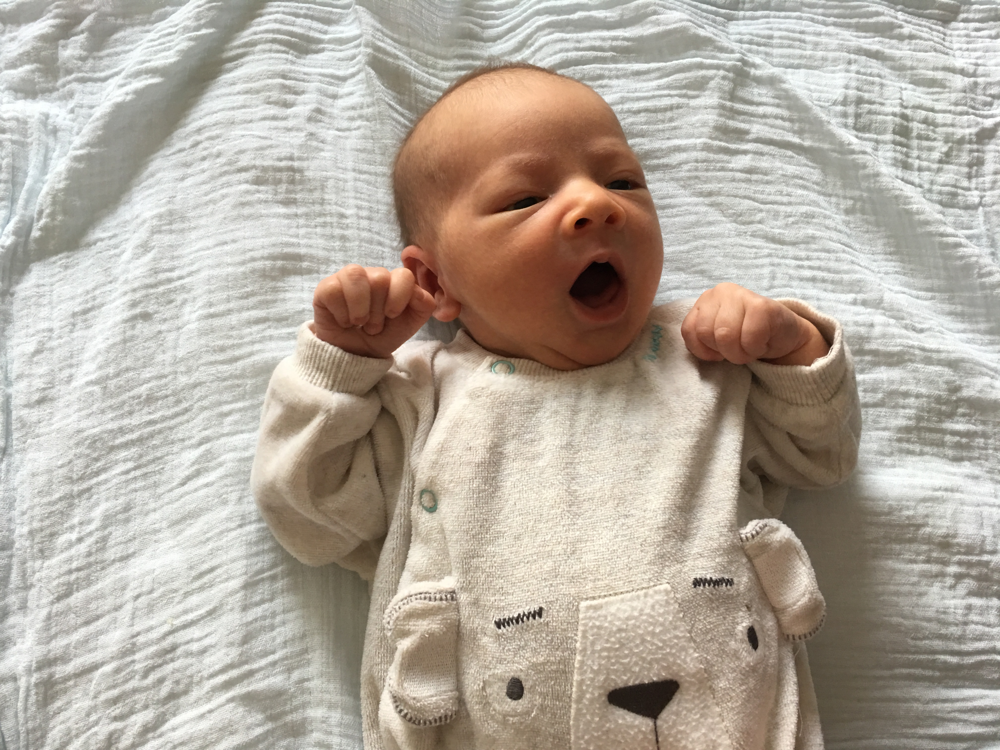

In de buik
Op 19 december 2018 kregen mijn grote broer en zussen over mij te horen. Ze klonken erg verrast en enthousiast, dat denk ik teminste want mijn oren waren toen nog niet helemaal ontwikkeld. Ik zou 10 mei geboren worden in het IJsselland Ziekenhuis. De dagen vlogen voorbij en in Februari wisten we het zeker: ik ben een jongetje! Mijn broer vond dat heel erg leuk terwijl mijn zussen liever wilden dat ik een meisje was, omdat jongens zogenaamd niet van shoppen houden. Dankzij mijn grote zus en mama had ik nog geen week later al een hele volle kast kleren en dergelijke, alleen een mutsje ontbrak nog. Om de maand werd er een echo van mij gemaakt. Met Generation-R Next, een onderzoek dat de ontwikkeling van Rotterdamse kinderen volgt, werden er extra echo's van mij gemaakt naast de reguliere echo's. Bij het meten zijn er hele leuke echo's gemaakt van onder andere mijn voetjes en handjes die gelijk uitgeprint konden worden. Hier heb ik dus een hele verzameling van foto's aan over gehouden!
Hier onder zie je mijn echo's!
Dat zijn foto's van mij toen ik nog in de buik zat.
Ik was hier 4 maanden, 14 cm lang en woog maar 190 gram.
 
De geboorte
Het was 6 mei toen ik het wel erg krapjes begon te vinden in de buik. Ik had heel de nacht geprobeerd anders te liggen, maar had toch besloten om dan maar in de ochtend eruit te komen! Rond een uur of 4 had mijn papa een aantal telefoontjes gepleegd. Er werd ervoor gekozen dat we niet meer naar het ziekenhuis gingen maar dat ik thuis uit de buik zou komen. En zo ben ik, Billy, op 7 mei om 07:12 thuis geboren. Ik woog 3465 gram en was ongeveer 50 cm lang.
Door mijn gehuil had ik mijn zus wakker gemaakt, wat ik super leuk vond omdat ze me toen voor het eerst kwam bezoeken! Al snel daarna ging ze weg, naar school. Ik was al zo moe geworden dat ik lekker was gaan slapen en toen ik wakker werd was mijn broer ook gekomen!
  